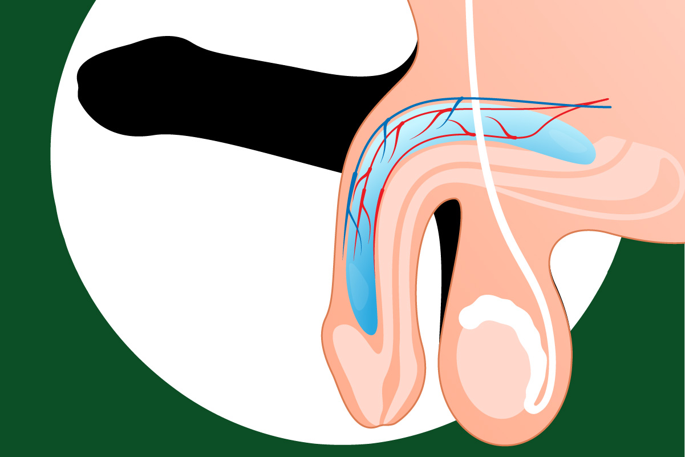

Gérer les moments gênants
Ça t'est sûrement déjà arrivé d'avoir une érection sans le vouloir au beau milieu d'un cours. C'est gênant et difficile à cacher, mais c'est tout à fait normal. Tout le monde vit cela durant la puberté.
Ces érections spontanées peuvent être causées par un frottement, un changement de position, ou simplement par les variations de testostérone dans ton corps.
Comment l'arrêter ?
L'érection est due à un influx sanguin. Pour rediriger ce sang ailleurs, tu peux :
- Contracter les muscles des jambes ou des fesses pendant 30 secondes.
- Serrer ton poing ou ton bras très fort quelques minutes.
- Changer de position discrètement.

Apprendre à connaître les réactions de son corps permet de mieux les gérer.
Trucs utiles pour rester zen
- Respire profondément : Cela aide à calmer le système nerveux.
- La diversion mentale : Pense à quelque chose de totalement neutre (comme tes devoirs ou une liste de courses) jusqu'à ce que ça passe.
- Patience : Cela ne dure généralement que quelques minutes.